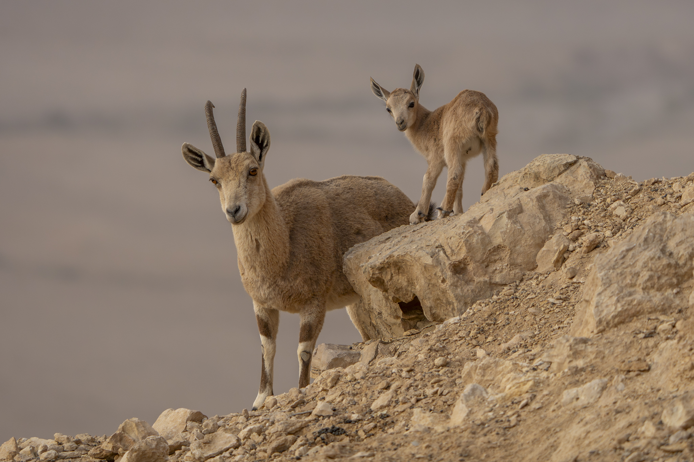

SHLOMI TOVA
Nature • Wildlife • Astrophotography
רגעים נבחרים
SELECTED MOMENTS
יעל נובי במצוקים
מכתש רמון | Sony a7V
יונקים
MAMMALS

שועל מצוי בשדות
צפון הארץ | Sony a9
יעל נובי צעיר
מצוקי המדבר | Sony a9
מבט מהטבע
Wild Nature | Sony a9